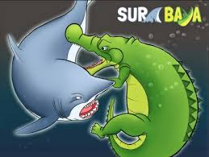

Pada zaman dahulu di laut Jawa hiduplah dua mahkluk yang sangat kuat, yaitu Sura dan Baya. Sura adalah seekor hiu yang terkenal ganas, sedangkan Baya adalah seekor buaya yang sangat kuat.
Awalnya mereka hidup dengan damai karena membagi wilayah kekuasaan. Sura menguasai lautan, sedangkan Baya menguasai sungai dan daratan di sekitarnya. Namun suatu hari mereka bertemu saat berburu mangsa.
Karena keduanya sama-sama lapar dan ingin mendapatkan makanan, terjadilah pertengkaran yang hebat. Mereka saling menunjukkan kekuatan masing-masing.
Pertarungan antara Sura dan Baya berlangsung sangat lama dan sengit. Air laut menjadi keruh karena perkelahian mereka.
Akhirnya mereka menyadari bahwa pertarungan tersebut tidak akan menghasilkan pemenang. Mereka kemudian sepakat untuk kembali membagi wilayah kekuasaan masing-masing.
Tempat terjadinya perkelahian itu kemudian dikenal dengan nama Surabaya, yang berasal dari kata Sura dan Baya. Nama ini kemudian menjadi nama kota besar di Jawa Timur yang kita kenal hingga sekarang.
Hewan apa yang bertarung dalam legenda Surabaya?